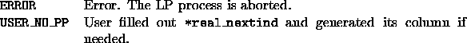

int user_generate_column(void *user, int generate_what, int cutnum,
cut_data **cuts, int prevind, int nextind,
int *real_nextind, double *colval,
int *colind, int *collen, double *obj)
This function is called when pricing out the columns that are not already fixed and are not explicitly represented in the matrix. Only the user knows the explicit description of these columns. When a missing variable need to be priced, the user is asked to provide the corresponding column. SYMPHONY scans through the known variables in the order of their user indices. After testing a variable in the matrix (prevind), SYMPHONY asks the user if there are any missing variables to be priced before the next variable in the matrix (nextind). If there are missing variables before nextind, the user has to supply the user index of the real next variable (real_nextind) along with the corresponding column. Occasionally SYMPHONY asks the user to simply supply the column corresponding to nextind. The generate_what flag is used for making a distinction between the two cases: in the former case it is set to GENERATE_REAL_NEXTIND and in the latter it is set to GENERATE_NEXTIND.


colval, colind, collen and obj do not need to be filled out if real_nextind is the same as nextind and generate_what is GENERATE_REAL_NEXTIND.